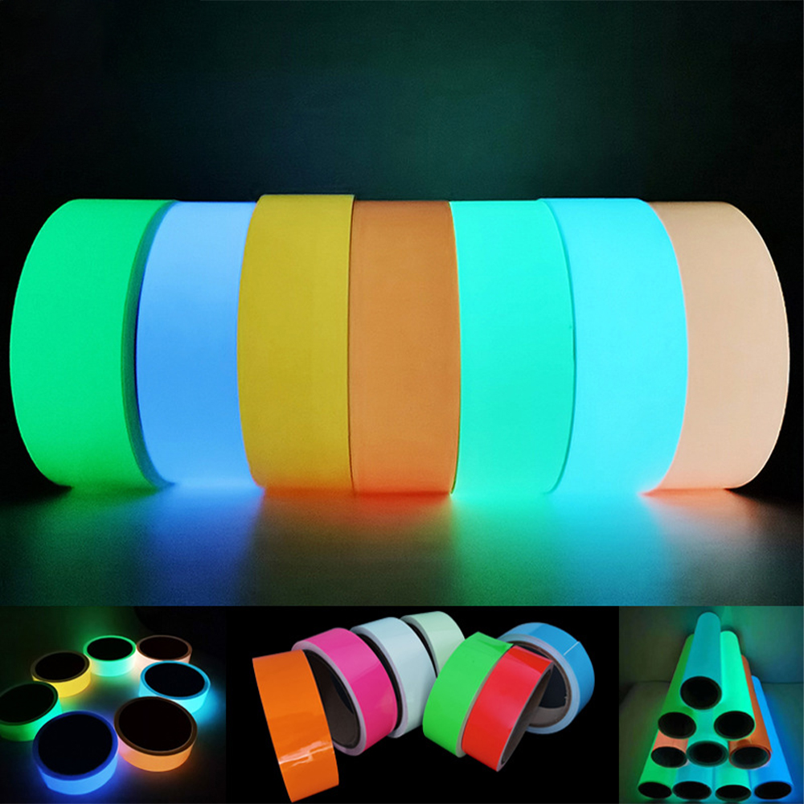
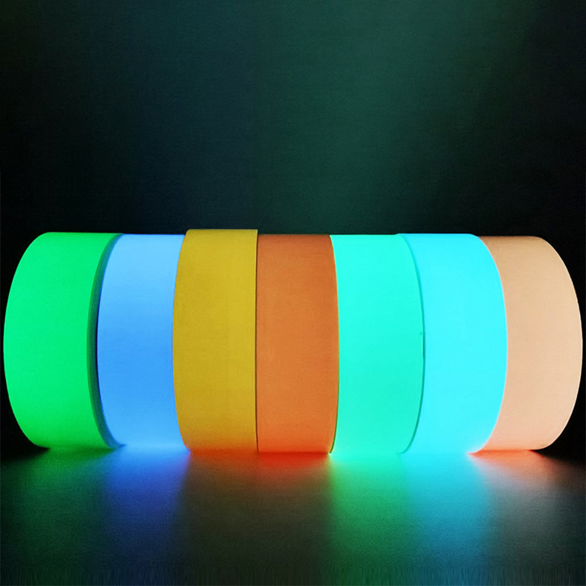
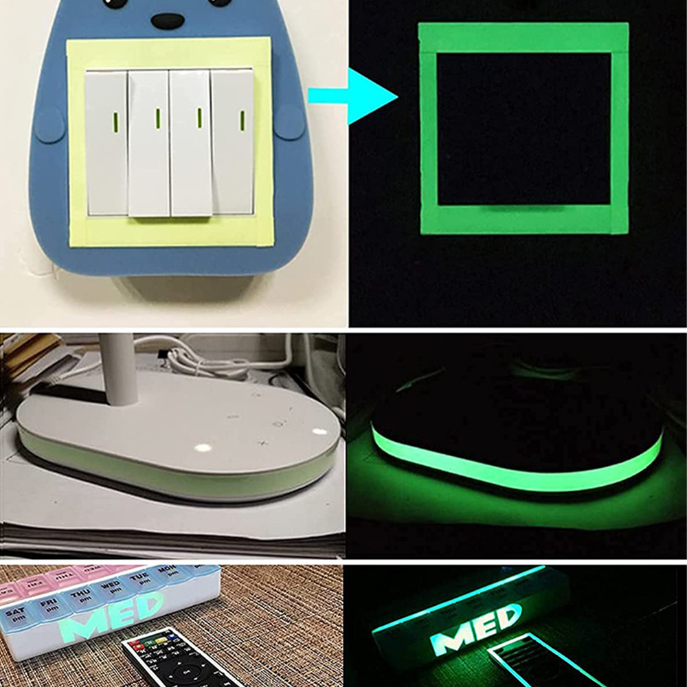
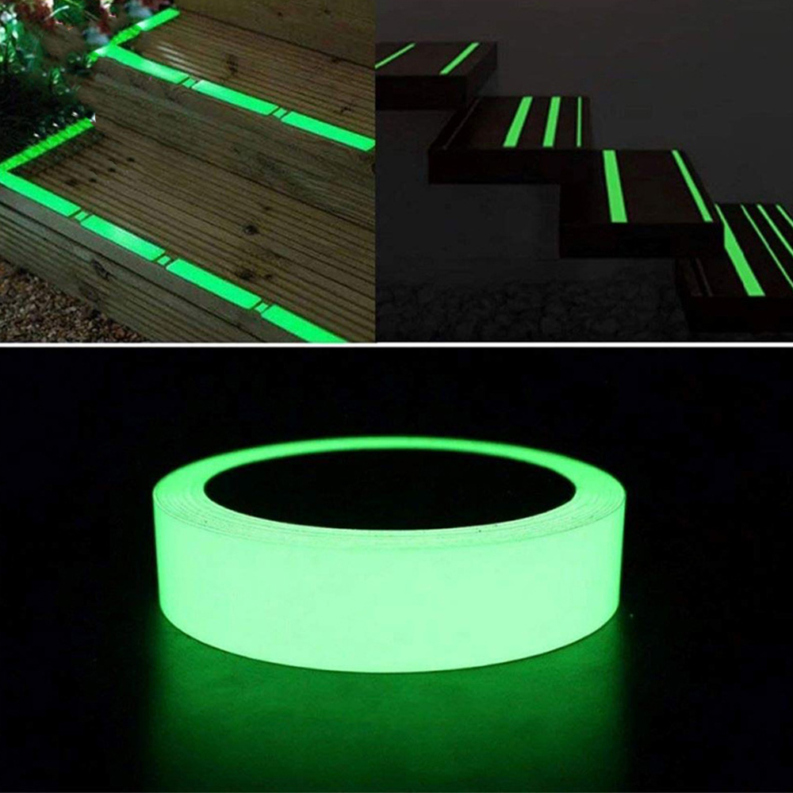
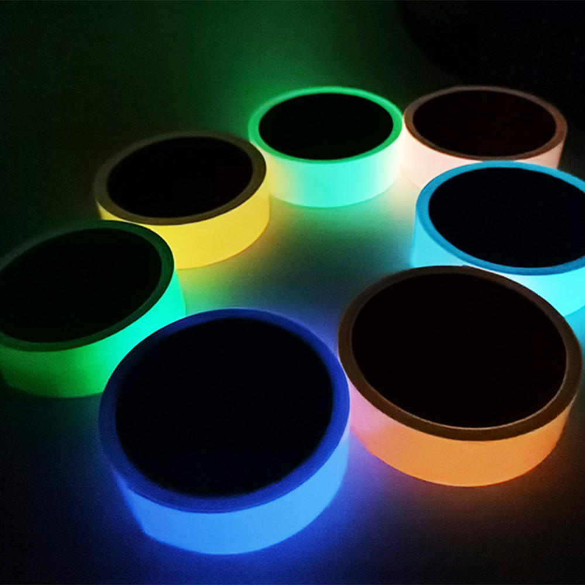
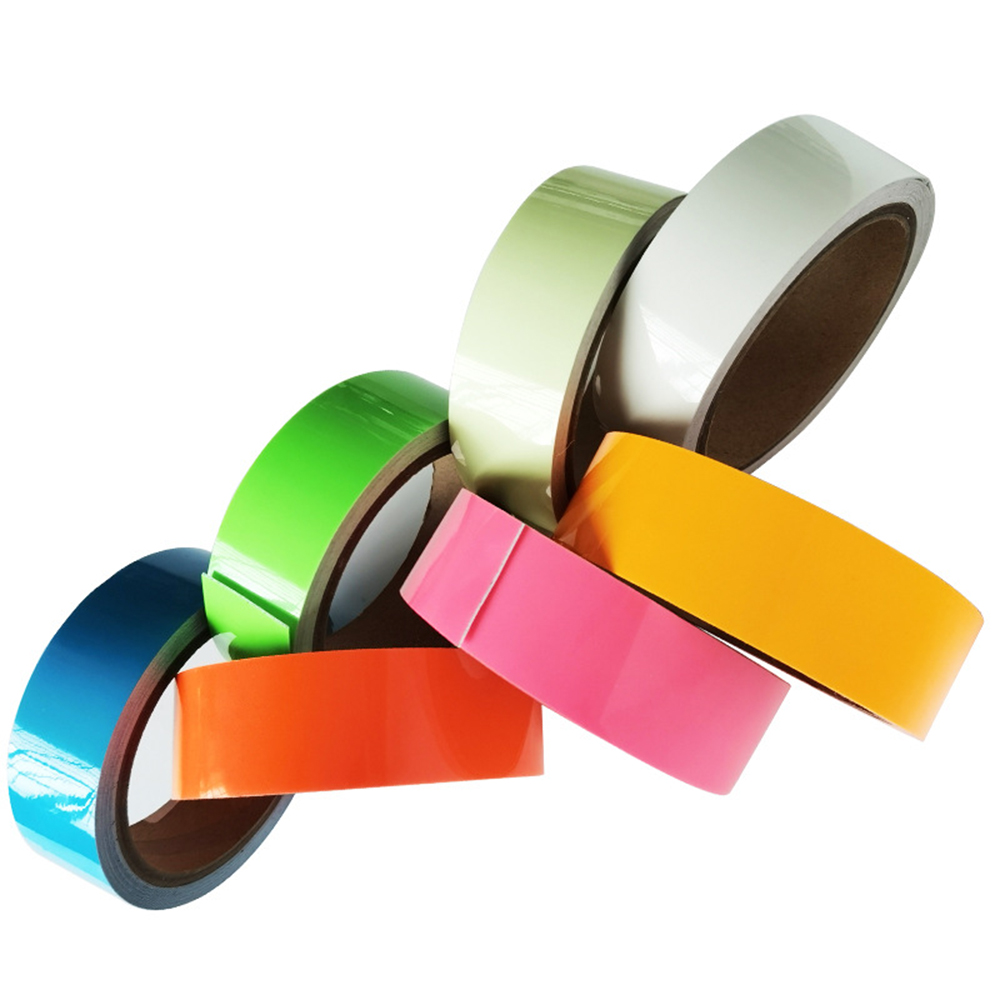

Luminous Tape 5 Meters Self-adhesive Glow Emergency Logo In The Dark Safety Stage Stickers Home Decor Party Supplies Decorative
Luminous Tapes Waterproof Glow In The Dark Sticker Fluorescent Night Self-adhesive Safety Home Supplies Security Warning Tapes
Feature:
1. Will glow in the dark after completely absorbing sun light or night light.
2. Self-adhesive, water-resistant and removable.
3. It can decorate your living room, bedroom, kitchen and other indoor places.can stick on electric switch, remote control panel, wall switches, plugs, sockets, locks
4. Easy to use and cut, easy to peel.
5. Multifunctional, environmentally friendly, luminous, decor.
6. Used for stairs, door surrounds, walkways, stairs, skirting boards, and exit ways.
Product material: PVC
Note:
Due to the different monitor and light effect, the actual color of the item might be slightly different from the color showed on the pictures. Thank you!
Please allow 1-2cm measuring deviation due to manual measurement.





